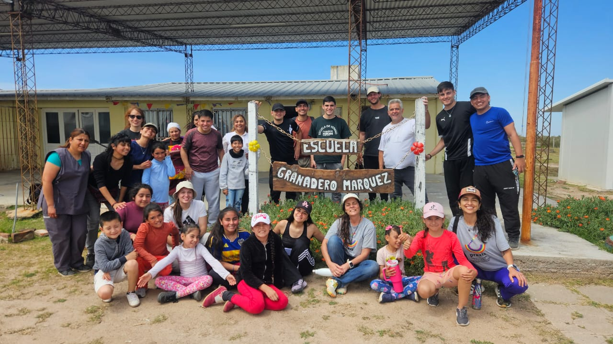

Concebimos toda práctica social: educativa, de investigación, intervención, etc.; vinculada con la autonomía personal, en clave de bienestar comunitario, como prácticas indivisibles y necesarias para construir convivencia democrática y cultura de paz.


Trabajamos desde una perspectiva crítica, situada y colaborativa, entendiendo que la producción de conocimiento es siempre colectiva y vinculada a situaciones y contextos concretos, sin dejar de considerar circunstancias macro estructurales y la sustentabilidad ambiental.
Asumimos una posición ético-política comprometida con la educación pública, los derechos humanos, con énfasis en la celebración de la diversidad como riqueza de la especie y el patrimonio cultural y ambiental.
Por eso hacemos hincapié en aportar propuestas interseccionales, y orientadas a construir consciencia y disposiciones para alentar justicia social y cultura de paz. Promovemos el trabajo en red,los diálogos genuinos y la articulación entre personas e instituciones educativas, artísticas y de desarrollo social; públicas y privadas, locales, provinciales, nacionales e internacionales.